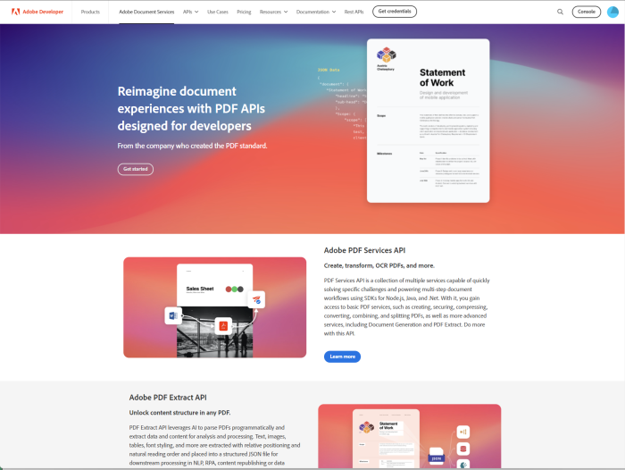

Mining Electronic Documents
For Fun and Profit
(and other business critical needs)
readmd.txt
- Raymond Camden
- Senior Developer Evangelist for Adobe
- raymondcamden.com
- @raymondcamden (DMs are open!)
- @raymondcamden@mastodon.social

Good News
- PDFs are easy to store
- PDFs are easy to share
- PDFs are awesome (no, really!)
Bad News
- Estimated 2.5 trillion PDFs
- According to highly paid consultants, 2.5T is a lot
- Data is safe, but "hidden" in documents
Our Goal

Yes, this is a completely gratuitous slide.
How?
- Get "information" from the PDFs
- Analyze that "information"
Getting Stuff from PDFs
- Text
- Styling Information
- Tables
- Images
Solution
- Adobe Document Services
- APIs related to Documents (duh)
- Created by PDF Wizards

Adobe Document Services
- PDF Services
- Document Generation
- PDF Embed
- Acrobat Sign
- PDF Extract
Adobe PDF Extract
- Uses Adobe Sensei (ML, AI, Skynet, etc)
- Extracts text, tables, images, styling information
- Tables can be CSV, XLSX, or images
- Extracts document structure
- Auto OCRs when necessary
Details
- SDKs for Node, Java, .NET, Python*
- REST API ✨
- Free trial (1K calls over 6 months)
Code Process
- Get credentials (one time)
- Get the SDK (or use REST)
- Write code to extract crap from PDF x
- Automate the previous step
- Profit 🤑💰🤑
There may be a few steps missing between 4 and 5.
For Today
- Node.js ("Node.js Is Bad Ass Rock Star Tech")
- Consider REST
Code Time!
General Pseudo-Code Flow
make a credentials object
create an execution context specific to your operation
(extract pdf, ocr pdf, etc)
set your input and options
execute
save result
Ray, show /demos/extract/extract.js

What It Means
- Docs
- JSONSchema (ray, if you didn't click it in the previous link, do so)
- Visualizer
NOW WHAT?
I don't know - thanks for showing up - any questions?
Scenario - Get Text
- Use for search engine
- Use for fragment
Ray, show /demos/extract/text.js
Scenario - Get Headers
- "Auto" summary
- Search (again)
Ray, show /demos/extract/headers.js
Scenario - Style Compliance
- Look for fonts
- Look for text size issues
Ray, show /demos/check_fonts.js
Scenario - Text Compliance
- Look for words we don't want
- Look for words that must include others
Ray, show /demos/check_text.js
Scenario - Process Tabular Data
- Analyze data as data
- Analytics, averages, etc etc
Ray, show /demos/extract/get_data_tables.js and process_data_tables.js
Let's Turn It Up
ML/AI/ETC
- What is the text discussing?
- Who is the text discussing?
- Legal clauses
- Problematic language
Scenario - Sentiment of a Document
- Incoming docs from customer service reports
- Review information on products
- Diffbot
Ray, show /demos/extract/sentiment.js
Scenario - Facts
- What statements are made in the document?
- Fact !== Truth
Ray, show /demos/extract/facts
Scenario - Entities
- What's "things" are discussed?
- People, places, organizations
- "Adobe" != Mud
- If document discusses X, flag it, move it, etc
Ray, show /demos/extract/entities.js
Scenario - Summarize
- What's the gist of a document?
- Let people quickly browse PDFs
- MeaningCloud
Ray, show /demos/extract/summarize.js
Scenario - Image Analysis
- Associate picture data with PDF
- Flag problematic images
- Microsoft Computer Vision
Ray, show /computer_vision, analyze then gather
Resources
- Docs
- Support Forum
- StackOverflow tags: adobe-documentgeneration, adobe-embed-api, adobe-pdfservices
- Blog
Questions?